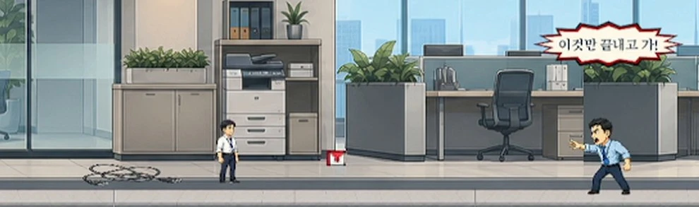
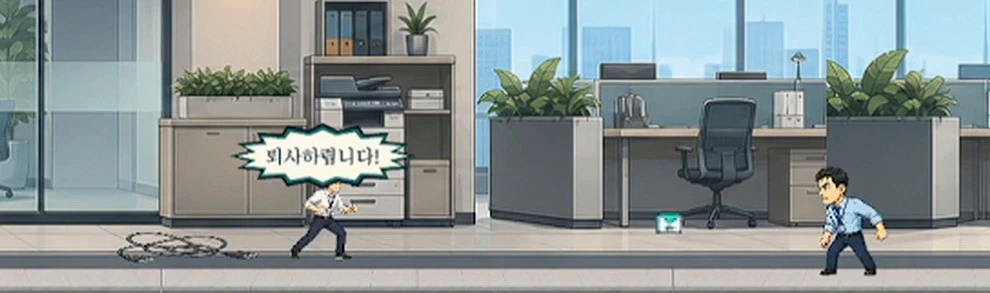

사표를 든 사원 앞에 일곱 직급의 보스가 나타납니다
- 레벨 길이
- 패링을 일찍 써볼 수 있도록 달리기 구간을 줄이고 장애물 등장 시점을 옮겼습니다. 직접 다시 달렸을 때 첫 보스까지 걸린 시간은 34초에서 23초로 줄었습니다.
- 패링 피드백
- 적이 쏜 붉은 투사체는 패링에 성공하면 청록색으로 바뀌어 보스에게 돌아갑니다. 공격과 대사가 겹쳐 타이밍을 놓치는 장면을 확인했습니다.
- 제작 범위
- 열 개로 잡았던 스테이지를 일곱 개로 줄였습니다. 줄인 시간은 매 스테이지에서 반복해서 보게 되는 캐릭터의 달리기 동작에 썼습니다.

